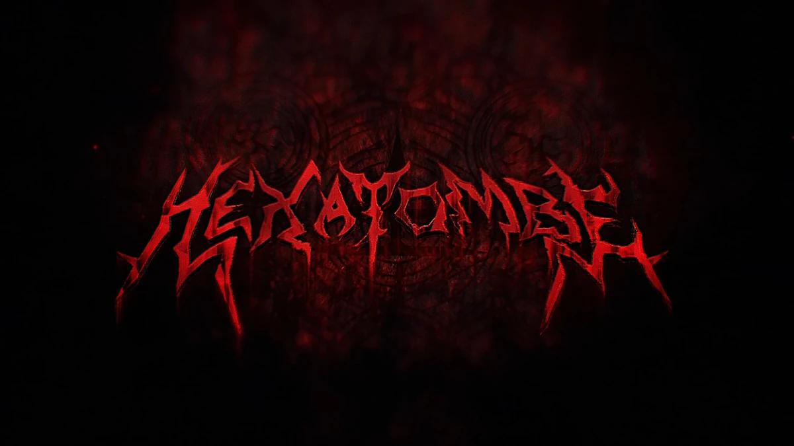

Recursos do Agente
Vida - Atributo relacionado ao seu estado corporal
Sanidade - Atributo relacionado ao seu estado mental
Esforço - Atributo relacionado a sua energia corporal
Cada elemento tem efeitos diferentes na realidade, trazendo diversas complicações para a humanidade por meio de criaturas ou efeitos diretos:
| Elemento | Como Funciona | Forte Contra |
|---|---|---|
| Sangue | Dano Físico e Alteração Corporal | Conhecimento |
| Morte | Dano Decomposição e Alterações Temporais | Sangue |
| Enegia | Dano Elemental e Alterações Materias | Morte |
| Conhecimento | Dano Mental e Alterações Mentais | Energia |
| Medo | Fazer o Impossivel | Não tem |
Vida - Atributo relacionado ao seu estado corporal
Sanidade - Atributo relacionado ao seu estado mental
Esforço - Atributo relacionado a sua energia corporal
